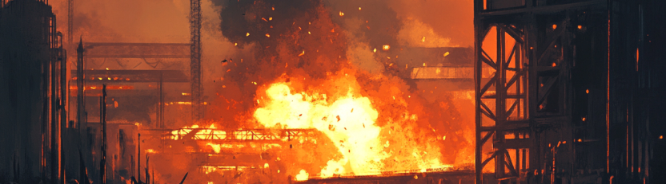

сохраняем руки, ноги, жизни работников через обучение
- охрана труда
- пожарная безопасность
- экологическая безопасность
- + 10 направлений
Несчастный случай на производстве: кто виноват и что делать?
Каждый год в России происходят тысячи несчастных случаев на производстве. Многие из них можно было бы предотвратить при должном соблюдении правил охраны труда. Мы поговорили с экспертом в области трудового законодательства Сергеем Николаевичем Забродиным, бывшим главным государственным инспектором труда, о том, как расследуются такие случаи и кто несет ответственность.
Реальный пример из практики
Рассмотрим конкретную ситуацию: при проведении работ по срезке кронштейна на высоте 5 метров работник был сбит кран-балкой, выполняющей перемещение груза по цеху. В результате падения с высоты работник погиб.
По словам Сергея Николаевича, в этом случае сразу видны несколько нарушений:
- отсутствие акта-допуска для работы подрядчика на территории заказчика,
- не оформлен наряд-допуск на работы повышенной опасности,
- отсутствие контроля со стороны ответственного руководителя работ,
- возможное отсутствие обучения работника по охране труда.
"Далее из практических соображений работодатель, у которого действующий цех, где работают его люди, нацеленные на выполнение определенных задач, приглашает выполнить работу другого работодателя. Следовательно, в любом случае каким-то образом будет воздействовать приглашенный на технологические процессы, которые проходят в цеху", - поясняет эксперт.
Кто несет ответственность?
Многие думают, что если работник сам нарушил технику безопасности, то вся ответственность лежит на нем. Однако это не так. "Мы определяем здесь тоже действия самого работника. Но если он был не обучен, наряд-допуск не выписан, значит, он не был проинструктирован. Здесь уже не рассматривается вина работника, поскольку работодатель не выполнил возложенные на него обязанности", - объясняет Сергей Николаевич. По закону, именно работодатель обязан обеспечить безопасные условия труда. Если не были проведены все необходимые инструктажи, обучение, не выданы средства индивидуальной защиты - ответственность ложится на компанию.
Что происходит после несчастного случая?
- Работодатель обязан сообщить о происшествии в соответствующие органы в течение суток.
- Формируется комиссия по расследованию несчастного случая.
- Комиссия изучает обстоятельства и причины случившегося, опрашивает свидетелей, проверяет документацию.
- По результатам составляется акт расследования.
- Материалы передаются в Следственный комитет, который решает вопрос о возбуждении уголовного дела.
"Уголовные дела, они возникают, то есть возбуждаются сразу, потому как есть повреждения здоровья, но они закрываются в связи с отсутствием состава преступления", - отмечает эксперт.
Как предотвратить несчастные случаи?
- Проводить качественное обучение по охране труда
- Разрабатывать и соблюдать инструкции по охране труда
- Обеспечивать работников средствами индивидуальной защиты
- Регулярно проводить оценку профессиональных рисков
- Не пренебрегать оформлением необходимых документов (наряды-допуски, акты-допуски и т.д.)
"Когда подпишешь документ, подпись стоит, уже люди как-то все равно по-другому относятся к своей работе. Все равно в памяти остается, что надо что-то как-то делать по-другому, а не так, пускать всё на самотёк", - подчеркивает Сергей Николаевич.
Заключение
Несчастные случаи на производстве - это не просто статистика. За каждым из них стоят человеческие жизни и судьбы. Соблюдение правил охраны труда - это не формальность, а реальный способ сохранить здоровье и жизни работников. Помните, что безопасность на рабочем месте - это общая ответственность и работодателя, и сотрудников.
Все статьи ГлавПро